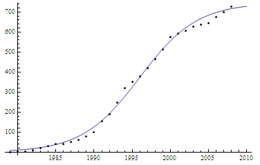

有下面一堆数据
data = {{1979, 0.15}, {1980, 1.2}, {1981, 3.3}, {1982, 9.5}, {1983,
19}, {1984, 30.61}, {1985, 40.29}, {1986, 42.11}, {1987,
49.84}, {1988, 60}, {1989, 76.78}, {1990, 99.13}, {1991,
153.54}, {1992, 187.8}, {1993, 248.28}, {1994, 318.74}, {1995,
349.99}, {1996, 379.51}, {1997, 418.29}, {1998, 465.73}, {1999,
512.71}, {2000, 576.32}, {2001, 592.53}, {2002, 607.17}, {2003,
627.34}, {2004, 635.67}, {2005, 645.82}, {2006, 674.27}, {2007,
699.99}, {2008, 726.21}, {2009, 753.56}, {2010, 786.17}}
需要用函数曲线
\[y(t) = \frac k{1 + a\cdot e^{-r\cdot t}}\]
来拟合。
但是直接利用 FindFit 的如下命令拟合出来却完全达不到想要的效果：
data = {{1979, 0.15}, {1980, 1.2}, {1981, 3.3}, {1982, 9.5}, {1983,
19}, {1984, 30.61}, {1985, 40.29}, {1986, 42.11}, {1987,
49.84}, {1988, 60}, {1989, 76.78}, {1990, 99.13}, {1991,
153.54}, {1992, 187.8}, {1993, 248.28}, {1994, 318.74}, {1995,
349.99}, {1996, 379.51}, {1997, 418.29}, {1998, 465.73}, {1999,
512.71}, {2000, 576.32}, {2001, 592.53}, {2002, 607.17}, {2003,
627.34}, {2004, 635.67}, {2005, 645.82}, {2006, 674.27}, {2007,
699.99}, {2008, 726.21}, {2009, 753.56}, {2010, 786.17}};
model = k/(1 + a*E^(-r*t))
fit = FindFit[data, model, {k, a, r}, t]
modelf = Function[{t}, Evaluate[model /. fit]]
Plot[{modelf[t]}, {t, 1979, 2010}, Epilog -> Map[Point, data]]
得到的函数是 337.236/(1 + 1. E^(-1. t)) ，而作出的图在该部分几乎是直的。如图。
然而，我们通过将数据平移（将每个横坐标均减去1979）后，却能得到一个很好的拟合
datapy = {{0, 0.15}, {1, 1.2}, {2, 3.3}, {3, 9.5}, {4, 19}, {5,
30.61}, {6, 40.29}, {7, 42.11}, {8, 49.84}, {9, 60}, {10,
76.78}, {11, 99.13}, {12, 153.54}, {13, 187.8}, {14, 248.28}, {15,
318.74}, {16, 349.99}, {17, 379.51}, {18, 418.29}, {19,
465.73}, {20, 512.71}, {21, 576.32}, {22, 592.53}, {23,
607.17}, {24, 627.34}, {25, 635.67}, {26, 645.82}, {27,
674.27}, {28, 699.99}, {29, 726.21}, {30, 753.56}, {31, 786.17}};
model = k/(1 + a*E^(-r*t))
fit = FindFit[datapy, model, {k, a, r}, t]
modelf = Function[{t}, Evaluate[model /. fit]]
Plot[{modelf[t]}, {t, 0, 31}, Epilog -> Map[Point, datapy]]
得到的函数是 746.207/(1 + 91.4293 E^(-0.26602 t)) ，如图。
(11.45 KB)
2012-4-30 18:19
这样我们再平移回去，便得到原数据的拟合函数曲线 746.207/(1 + 91.4293 E^(-0.26602 (t - 1979))) ，作图如下。
Plot[746.207/(1 + 91.4293 E^(-0.26602 (t - 1979))), {t, 1979, 2010},
Epilog -> Map[Point, data]]

(6.49 KB)
2012-4-30 18:22
注意到函数能左右平移，这是因为 $a\cdot e^{-r\cdot (t+c)} = (a\cdot e^{-rc})e^{-r\cdot t}$，所以 746.207/(1 + 91.4293 E^(-0.26602 (t - 1979))) 其实也可以变回原来要求的形式。
于是当时我就奇怪了，既然该函数能左右平移，那为什么一开始不行，要移回来就行了呢？
后来在 http://reference.wolfram.com/legacy/v7/ref/FindFit.html 这里看到后面提到的“参数初始值”部分才知道原因所在。
给定不同的参数初始值，可能会得到不同的拟合曲线，上面的情况就是默认的初始值搜索不到那个很好的拟合。
但是初始值应该定在哪里，真不好说，我试过很多值都还是跟最开始差不多甚至出现了些不知什么意思的信息，直到利用上面的结果的近似值给出的初始值才勉强可以（还会弹出不知什么信息）
data = {{1979, 0.15}, {1980, 1.2}, {1981, 3.3}, {1982, 9.5}, {1983,
19}, {1984, 30.61}, {1985, 40.29}, {1986, 42.11}, {1987,
49.84}, {1988, 60}, {1989, 76.78}, {1990, 99.13}, {1991,
153.54}, {1992, 187.8}, {1993, 248.28}, {1994, 318.74}, {1995,
349.99}, {1996, 379.51}, {1997, 418.29}, {1998, 465.73}, {1999,
512.71}, {2000, 576.32}, {2001, 592.53}, {2002, 607.17}, {2003,
627.34}, {2004, 635.67}, {2005, 645.82}, {2006, 674.27}, {2007,
699.99}, {2008, 726.21}, {2009, 753.56}, {2010, 786.17}};
model = k/(1 + a*E^(-r*t));
fit = FindFit[data,
model, {{k, 746.2}, {a, 91.4293*E^(0.266*1979)}, {r, 0.266}}, t]
modelf = Function[{t}, Evaluate[model /. fit]]
Plot[{modelf[t]}, {t, 1979, 2010}, Epilog -> Map[Point, data]]

(16.67 KB)
2012-4-30 18:32
所以还是平移好了……
|
 发表于 2012-4-30 18:13
发表于 2012-4-30 18:13